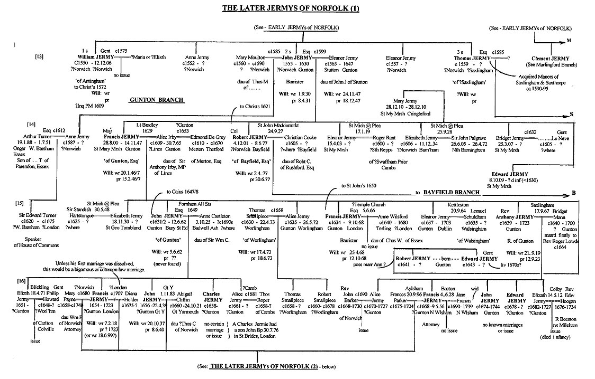

The younger Robert Jermy had three sons - William, John and Thomas - and two daughters - Anne and Eleanor - born in the early Elizabethan era (c1550s) and presumably raised at Antingham - latterly with John Kempe as their step-father. The eldest son William Jermy (born c1553) went to Cambridge in 1572, was later described as a 'Gent' of Antingham (rather than Esq) and may have married and resided in Norwich ca 1600, but there is no clear evidence. According to an Inq PM held at Norwich Castle on 11th June 1607, as reported in The Genealogist (?date), a William Jermy died on the 12th of Dec 1606 - with John Jermy, his brother, as his heir, aged 25. (John was actually about 50 that year; there appears to be no other William and John Jermy brothers in Norfolk ca 1606/7.) Davy shows William to have had a wife Elizabeth, but no issue. (I believe Blomefield or Davy shows him as dying in 1610.) Although he was the eldest son, the family estate at Antingham was likely transferred to John Kempe on his marriage to his widowed mother Anne (ex-Jermy) and thus his status as Gent only. I believe he was left some land at Antingham by his father in 1560. [There was a Dorothy Jermy holding considerable land in neighbouring Gimingham - probably a little earlier (in the 1530/40s?); she was likely a daughter of Thomas Jermy (d 1503) and his first wife Anne Yelverton - born ca 1482.] Anne Calthorpe's father, Richard Calthorpe, Esq, left a Will which, I believe, benefited his son-in-law Robert Jermy and/or the latter's children quite well. [Yes, he left land in Antingham (seemingly the Manor) to his daughter Anne's husband Robert Jermy and money to their children!] This despite having had 18 other children of his own to consider. One son, Sir Martin Calthorpe, would become a Lord Mayor of London. On Robert's death, the manor apparently went to Anne and thence to her 3rd husband John Kempe by the mid 1560s.
 Robert's second son John Jermy, Esq (born c1555) would likely have gone to Cambridge also (ca 1573), before training to be a Barrister in London. He seems to have been quite successful and latterly (?mid-1580s) became the Bishop of Norwich's chief legal adviser or Counsellor (sometimes erroneously called 'Chancellor'). He thus became wealthy enough to acquire considerable property in Norfolk - from about 1610 or so - and thereby set up the two major branches of the Jermy family in the north of that county - as well as purchasing Marlingford (and apparently Saxlingham). Whether either William or John benefited further from Antingham, I'm unaware. After John Kempe, Martin Calthorpe was described at Cambridge as being 'of Antingahm, Esq' (around the time of the civil war) - a parish that was unlikely to have two manors. The Jermy sons would have to find their own properties it seems. The future of the Norfolk Jermys would thus rely primarily upon the successful talents of John Jermy, the Barrister/Counsellor, Robert Jnr's second son. [Note: I don't believe he was the John Jermy described as a 'Steward of Norwich' at about this same time (ca 1630); that post was possibly held by one of the Suffolk Jermys - whose sister would marry in Walsingham in Norfolk in which that side of the family thus still had some contact.]
The third son Thomas Jermy, Esq (born c1560) who appears to have married, somehow acquired the Manor of Saxlingham, also in north Norfolk, around 1590 or so. This was held by the Heydon family in the mid-Elizabethan period but seems to have come into possession of Sir Henry Sydney of Walsingham by about 1585. Blomefield shows that it then " 'came' to Thomas Jermy, Esq " (ie ca 1590). Whether this was through a prudent marriage or by purchase is unknown. More probably, his elder brother John had bought it - some years before buying nearby Bayfield. [See details of the latter's Inq PM, later] But this short-lived sub-branch continued at Saxlingham for about 60 years only - with some parish register evidence - although this has been confounded with that from two other sources. Firstly, the later Bayfield branch of the Jermys sometimes used this same neighbouring church (not having one at Bayfield; they used others locally as well) and secondly, the otherwise useful Mormon IGI has confused events registered at the other, more southerly Saxlingham in Norfolk (more properly named Saxlingham Nethergate) with those at this northern parish (Saxlingham by Holt). The former parish had several member of the (formerly named) Jermyn family resident there at the same time - having spread from nearby Hempnall - many of whom had been subsequently accorded the name Jermy. It's thus difficult to disentangle the respective sources for the various 'Jermy' events so registered without further direct examination of the registers. Apparently to cover themselves (or just due to their confusion), the Mormon's IGI sometimes shows the same marriages and/or baptisms at both venues! After the Civil war, the northern Saxlingham was eventually in the hands of a different family.
Further confusion attend this possible branch of the family in that the abstracts of Cambridge graduates (Alumni Cantabriensis by Venn) shows - in addition to details on 28 Jermys - those for 24 Jermyns (many of whom were of the noble family of that name settled at Rushbrooke, Suffolk from 1200 or before) - one only of whom - a Thomas - being described as 'of Norfolk' and as matriculating in 1606/7 at Corpus Christi as Thomas Jermy. He acquired his B.A. and M.A. (1611/ 1614) and was ordained - at Norwich - in 1611 before becoming the Vicar/Rector of three Norfolk parishes - at Ludham, Belaugh and Buxton, when his name is sometimes given as Jermyn. I believe he was probably the son of Thomas Jermy of Saxlingham and was born there, or at Antingham or Norwich, around 1590. He held Ludham in 1611 - where the Arms of Jermy and Mounteney, among others, are noted. He had with his first wife Susan, a daughter Susan baptised at Belaugh in Oct 1613 and then, after a gap of 13 years (when he may have lived at one of his other parishes), six more daughters and one son - a namesake Thomas - there - between 1625 and 1642, with second wife Elizabeth. Two of the earlier daughters were named Margaret and Mary. The son Thomas was born in 1628. Whether he lived, married or had issue himself (in the awkward Civil war/Commonwealth period) is unknown at present. Rev Thomas Jermy(n) was buried in Belaugh, on 22 July 1659, where other burials at least were registered in the 1650s - although oddly no marriages whatsoever were recorded in the same register and, the Bishop's Transcripts are oddly missing for the period 1634-64.
[We may note here that this small parish of Belaugh would witness the marriage and baptisms for a later 'floating' John Jermy - and wife Elizabeth (she of Belaugh) - a century later (1742-1749) - said John (likely born c 1710-20) being previously of Stratton Strawless where this couple had three later children in the 1750s. Might he have been a grandson of the aforementioned Thomas ? John's own sons were named only John and William, however. Or, could he have been a grandson of John the day labourer of Yarmouth? Stratton Strawless was immediately next to Haynford and was owned by the Marsham family who would hold mortgages on property of the Jermy's cousins, the Howards, at Carlton Colville. [Note; a Robert Marsham was an Under clerk in London in the 1670s with a Lone (friends of the Howards and Smallpieces), an Allen and a Jermy (Edward).]
John Jermy, Esq the Barrister/Diocesan Counsellor, who appears to have resided in London and Norwich before buying his various Norfolk estates, married firstly in about 1586 - to Mary Moulton, daughter of Thomas Moulton, a Gent - possibly of Cheshire - by whom he had but one child - a daughter Anne - before Mary's early death. Anne Jermy married well - to Arthur Turner Esq - of Parendon, Essex (but born at Ongar - about 2 miles from my present residence) although they later settled in north Norfolk. This union was probably arranged by her father through his legal contacts in London and hence this first wife's family apparently not being of East Anglia. John had been called to the Bar in 1587, having been at Clifford's Inn and the Middle Temple before that. He was made Treasurer in 1614 and had been named a Trustee of the Paston estate by the late Sir William Paston (d 1610). His daughter Anne's son was Sir Edward Turner, a Speaker of the House of Commons in 1664. John re-married in about 1599 to a distant cousin - Eleanor Jermy, daughter of John Jermy of Stutton (c1540-1592) by whom he would have 7 more children - 3 sons and 4 daughters - between 1600 and 1610. One son and one daughter died in infancy. The other 3 daughters all married well into Norfolk gentry families, before the Civil war.
The remainder of this account of the later Norfolk Jermys concerns primarily the life and times of the two surviving sons of the present John Jermy, Esq - namely, Francis Jermy and Robert Jermy - and of their descendents, although it will also describe (firstly) their cousin line at Marlingford to some extent. Thus John Jermy, the Counsellor, who married for the first time about 1586 assumes a similar position in Norfolk to that of his slightly older 3rd cousin Francis Jermy of Brightwell, Suffolk (High Sheriff that year) - being the central figures of their family's 13th generation - from whom respective lines in the two counties descend in parallel - along side their junior lines, at Stutton and Marlingford, respectively. John's second marriage to a daughter of the Suffolk family served to reinforce to some extent the coherence of the Jermys of East Anglia as a whole. As they began a generation before the major Norfolk lines of Gunton and Bayfield, we may describe the slightly earlier generations at Marlingford and Saxlingham first.